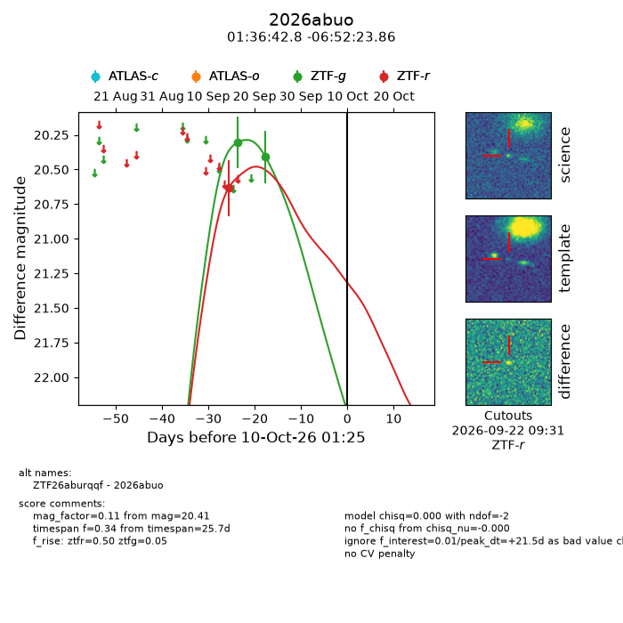
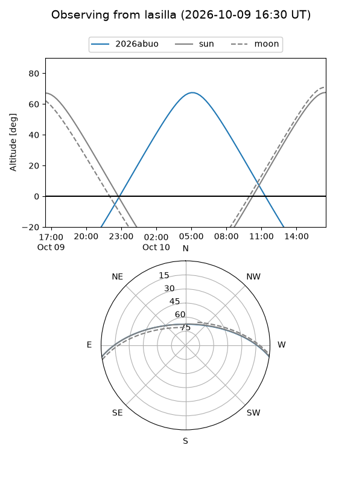
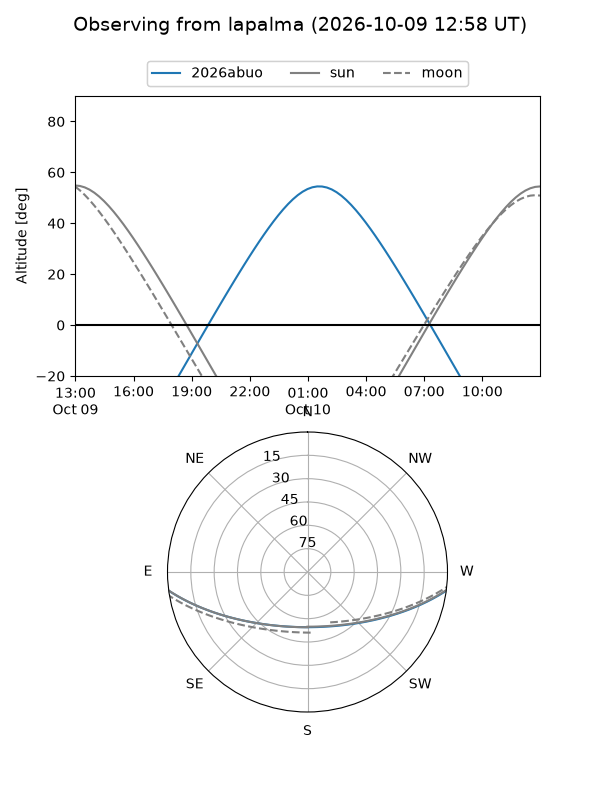
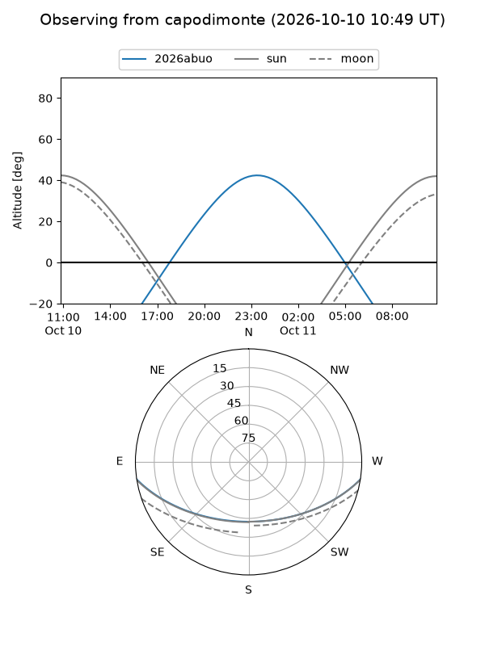
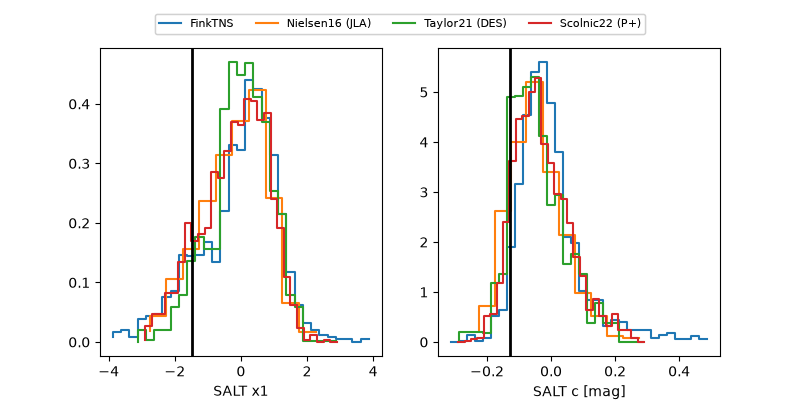

2026abuo
Target 2026abuo at 2026-10-10 13:26
Aliases and brokers:
FINK-ZTF: ztf.fink-portal.org/ZTF26aburqqf
Lasair-ZTF: lasair-ztf.lsst.ac.uk/objects/ZTF26aburqqf
ALeRCE-ZTF: alerce.online/object/ZTF26aburqqf
YSE-PZ: ziggy.ucolick.org/yse/transient_detail/2026abuo
TNS name: wis-tns.org/object/2026abuo
Direct TNS query: direct search
alt names
ZTF26aburqqf (ztf,fink_ztf)
2026abuo (tns,yse)
Coordinates:
equatorial (ra, dec) = 24.1784,-6.87329
equatorial (HMS+DMS) = 01:36:42.82,-06:52:23.86
galactic (l, b) = (152.9403,-67.06910)
Flags:
peak dt: +22.0
Photometry:
last ztfg=20.41, ztfr=20.63
2 ztfg, 1 ztfr detections
Lightcurve

Visibility



Additional plots
